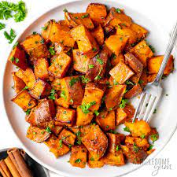

Over Night Oats

summer sweet potatoes
This is an amazing side to your summer dinners
Unique sweet potato recipe thats simple and delicious
Ingredients
- 1 whole sweet potato
- olive oil
- salt and pepper
- cinnamon
Recipe instructions
- chop whjole sweet potato into small to medium sized pieces
- add chopped potatos into an oven pan
- add olive oil till all pieces are covered eveanly
- add salt and pepper to taste
- dust cinnamon evenly over all pieces
- give the potatoes a nice toss in the pan
- put into oven for 40mins and 400 degree F
Return to top
Return to main page